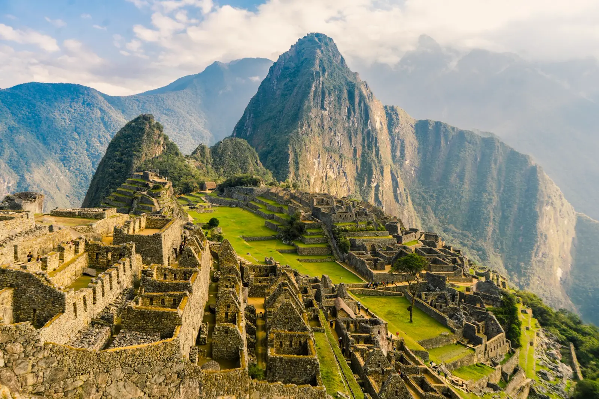
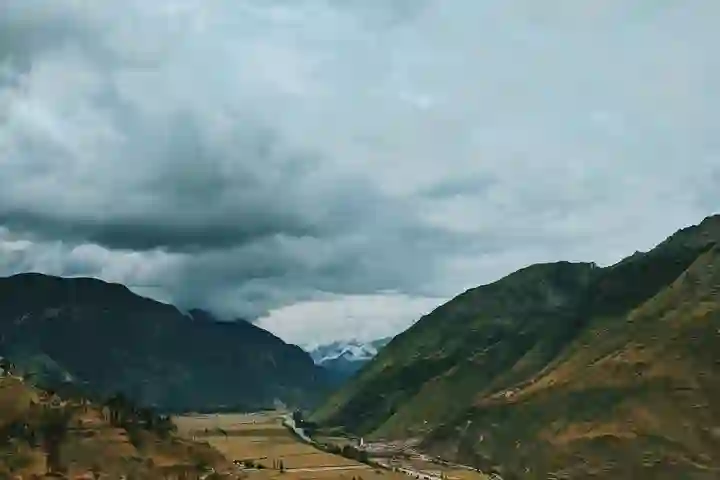
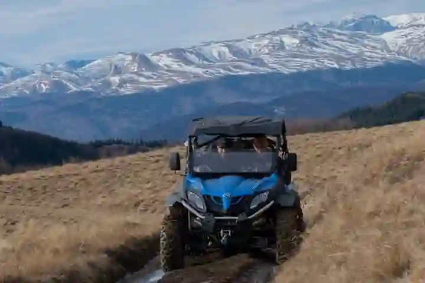
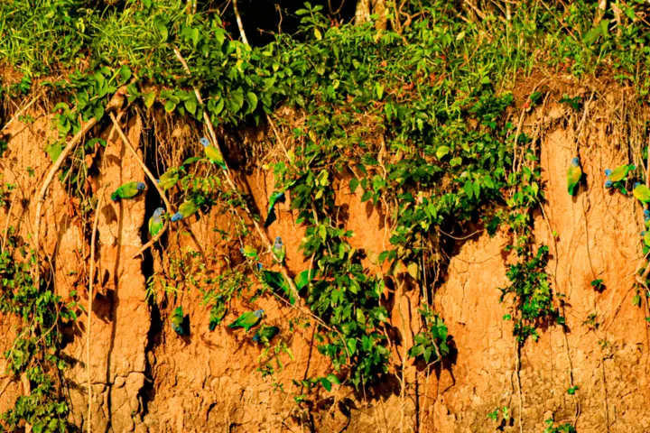
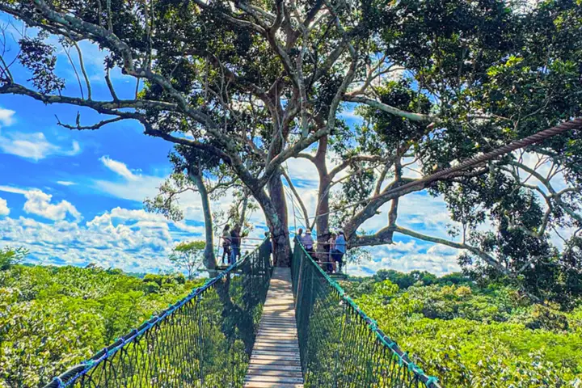
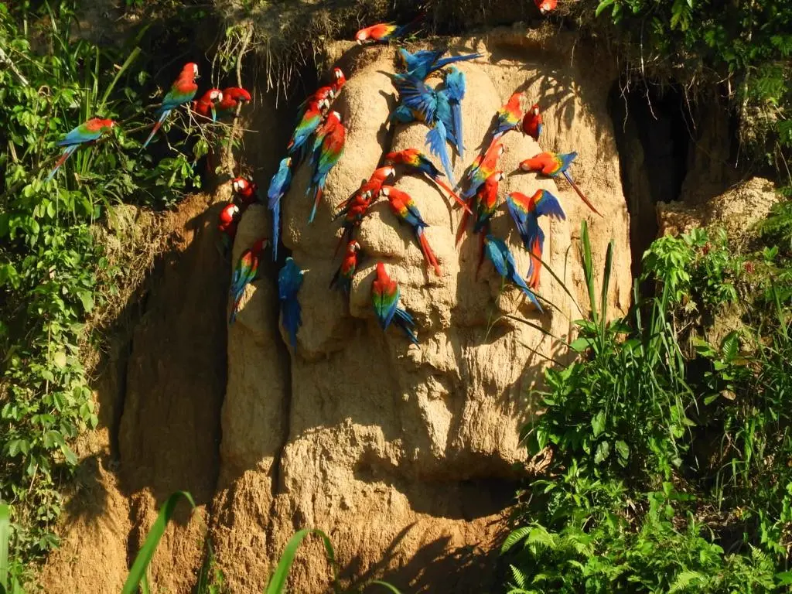
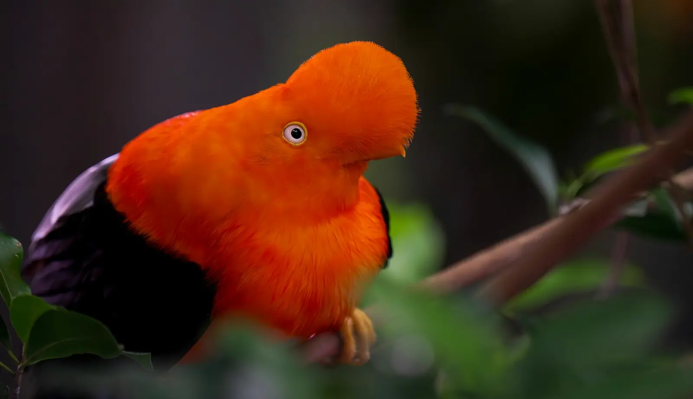

Travel agency in Cusco
Tours to Machu Picchu, Cusco and Tambopata
From the Sacred Valley to the Amazon rainforest, with a Cusco agency.
01
Machu Picchu Tours
The Sacred Valley, a night at the foot of the mountain and the Inca citadel with a guide.

02
Cusco Tours
The City Tour, the Sacred Valley and the South Valley: Inca and colonial Cusco.
-
 Half day
Easy · 3,400 to 3,700 m
Cusco City Tour
Qorikancha · Sacsayhuamán · Q'enqo · Puka Pukara
S/ 40 per personSee tour →
Half day
Easy · 3,400 to 3,700 m
Cusco City Tour
Qorikancha · Sacsayhuamán · Q'enqo · Puka Pukara
S/ 40 per personSee tour →
-
 1 day
Easy · up to 3,760 m
Sacred Valley of the Incas
[Places to be confirmed]
S/ 75 per personSee tour →
1 day
Easy · up to 3,760 m
Sacred Valley of the Incas
[Places to be confirmed]
S/ 75 per personSee tour →
-
 [Duration to be confirmed]
[Difficulty to be confirmed] · up to 3,760 m
ATV Ride through the Sacred Valley
Maras · Moray
Price to be confirmedSee tour →
[Duration to be confirmed]
[Difficulty to be confirmed] · up to 3,760 m
ATV Ride through the Sacred Valley
Maras · Moray
Price to be confirmedSee tour →
-

[Duration to be confirmed] Easy · up to 3,300 m South Valley [Places to be confirmed] S/ 50 per personSee tour →
03
Treks and Mountains
Rainbow Mountain, Palcoyo, Humantay, the Seven Lakes, Waqrapukara and Salkantay.
-
 1 day
Challenging · over 5,000 m
Rainbow Mountain
Vinicunca
S/ 75 per personSee tour →
1 day
Challenging · over 5,000 m
Rainbow Mountain
Vinicunca
S/ 75 per personSee tour →
-
 1 day
Challenging · 4,200 m
Humantay Lake
Humantay Lake
S/ 80 per personSee tour →
1 day
Challenging · 4,200 m
Humantay Lake
Humantay Lake
S/ 80 per personSee tour →
-
 [Days to be confirmed]
Challenging · pass at about 4,600 m
Salkantay Trek
Salkantay
US$ 380 per personSee tour →
[Days to be confirmed]
Challenging · pass at about 4,600 m
Salkantay Trek
Salkantay
US$ 380 per personSee tour →
-

[Duration to be confirmed] [Difficulty to be confirmed] · over 5,000 m ATV Ride to Rainbow Mountain Vinicunca Price to be confirmedSee tour →
04
Tambopata and Manu
The Peruvian Amazon: macaw clay licks, Lake Sandoval, nights in a lodge and the cloud forest of Manu.
-

4 days / 3 nights Easy · lowland rainforest Tambopata Grand Experience · 4 Days / 3 Nights Puerto Maldonado · Lake Sandoval · La Cachuela parrot clay lick · Matsiguenka family US$ 280 per personSee tour → -

3 days / 2 nights Easy · lowland rainforest Tambopata Complete Experience · 3 Days / 2 Nights Puerto Maldonado · Matsiguenka family · Lake Sandoval · Rolín Monkey Island Price to be confirmedSee tour → -
 2 days / 1 night
Easy · lowland rainforest
Chuncho Clay Lick · 2 Days / 1 Night
Puerto Maldonado · Tambopata River · Observation tower · Chuncho clay lick
US$ 250 per personSee tour →
2 days / 1 night
Easy · lowland rainforest
Chuncho Clay Lick · 2 Days / 1 Night
Puerto Maldonado · Tambopata River · Observation tower · Chuncho clay lick
US$ 250 per personSee tour →
-
 4 days / 3 nights
Moderate · from 3,600 m to lowland rainforest
Manu 4 Days / 3 Nights
Paucartambo · Ninamarca · Cloud forest · Pilcopata
US$ 270 per personSee tour →
4 days / 3 nights
Moderate · from 3,600 m to lowland rainforest
Manu 4 Days / 3 Nights
Paucartambo · Ninamarca · Cloud forest · Pilcopata
US$ 270 per personSee tour →
05
Puno and Lake Titicaca
The highest navigable lake in the world and the floating islands of the Uros.




06 — Destinations
07
Why travel with Inkas Golden?
- 1
A Cusco agency
We are in Cusco: we look after you before, during and after your trip. Our office is at Calle Plateros 328.
- 2
Over 20 years in tourism
We have been organizing trips from Cusco for over 20 years.
- 3
Guides in your language
Guides in Spanish and English, and in other languages if you ask when you book.
- 4
Pay the way you prefer
Yape, Plin, bank transfer, card, PayPal or cash.
08
What our travelers say
[Real Google reviews: coming once the agency has its Business Profile]
Is the price per person?
Yes. All prices on this website are per person. For groups or a private tour, write to us and we will send you a quote.
How can I pay?
With Yape, Plin, bank transfer, card, PayPal or cash. Before any payment, we confirm availability and the price with you on WhatsApp.
What language does the guide speak?
Our guides speak Spanish and English. If you need another language, ask when you book and we will arrange it.
Where and when will I be picked up?
All tours from Cusco include pickup at your hotel (confirmed by the agency on 25 Sep). The exact time depends on the tour: we confirm it on WhatsApp when you book. [Pickup times for each tour: to be confirmed]
What shoes do I need?
Comfortable sneakers are enough for the cultural tours. For the mountains and treks, hiking shoes or shoes with a good grip, because there are stretches of dirt and stone. In the rainforest, shoes that can get wet.
When is the best time to visit Cusco and Machu Picchu?
The dry season, from May to September, has clearer skies. From December to March it rains more, but there are fewer people.
What is altitude sickness (soroche) and how can I avoid it?
It is the discomfort caused by the altitude: Cusco is at about 3,400 m. Rest on the first day, eat light, drink plenty of water and leave the mountains for later.
How do I get to Tambopata?
By plane from Cusco or Lima to Puerto Maldonado, or by bus from Cusco on the Interoceanic Highway. From Puerto Maldonado, the lodges are reached by boat.

Ready to travel?